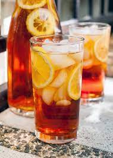

Sweet Tea

Description
Truly a Southern staple, an ice cold glass of sweet tea can cool you right down even on the hottest of days.
Every true Southern knows - sweet tea must be made from scratch and cold unsweetened tea can never be properly made sweet!
Ingredients
- Black tea of your choice (I usually use Lipton brand)
- Granulated white sugar
Steps
- Begin by boiling water on your stove
- Once water is boiling, remove water from heat and add tea bags to water
- Cover pot to trap heat inside
- Allow tea to steep for at least 30 minutes
- While tea is steeping, pour one cup of sugar into the pitcher (You may wish to add more or less and adjust for sweetness)
- Once the time is up, pour the still hot tea into the pitcher and stir for 5 minutes or until sugar is fully dissolved
- Enjoy!